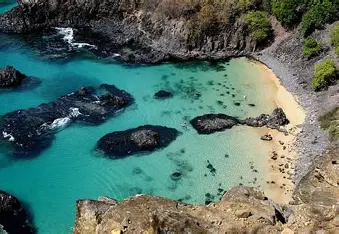

Descobrindo as Praias do Nordeste
Da Bahia ao Rio Grande do Norte, passando por Sergipe, Alagoas, Pernambuco, Paraíba, além do Ceará, Piauí e Maranhão: o que não faltam são faixas de areia maravilhosas e praias com as mais diversas características! Não há dúvidas que muitas das melhores praias do Brasil estão no Nordeste!
Fernando de Noronha é famosa por suas praias deslumbrantes, com águas cristalinas e paisagens naturais impressionantes, perfeitas para mergulho e relaxamento. Como essa linda praia que visitamos nas ferias de janeiro.
